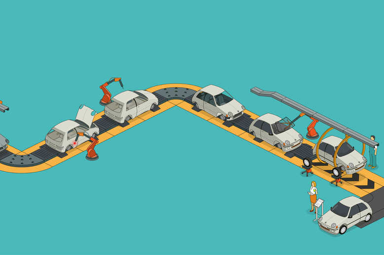
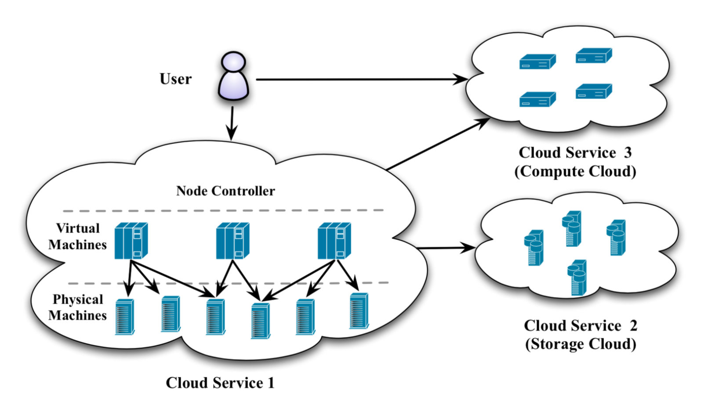

Hyperautomation
Hyperautomation brings together several components of process automation, integrating tools and technologies that amplify the ability to automate work.
It starts with robotic process automation (RPA) at its core, and expands automation capability with artificial intelligence (AI), process mining, analytics, and other advanced tools.
The idea is to automate more and more knowledge work, and engage everyone in an organization to be part of the transformation.

where you can learn more about Hyperautomation
Multiexpereince
Multiexperience refers to the various permutations of modalities (e.g., touch, voice and gesture), devices and apps that users interact with on their digital
journey across the various touchpoints. Multiexperience development involves creating fit-for-purpose apps based on touchpoint-specific modalities, while at the same time ensuring
a consistent user experience across web, mobile, wearable, conversational and immersive touchpoints.

where you can learn more about multi-Experience
Distributed-cloud
A distributed cloud means that the computation, storage, and networking are in a micro-cloud located
outside the centralized cloud. The distributed cloud is closer to the end-user as a decentralized cloud system.The cloud expands its territory and becomes a distributed cloud.This is the distribution of public cloud services to different
locations while the originating public cloud provider assumes responsibility for the operation, governance, updates to and evolution of the services. According to industry analyst Gartner's report, this represents a significant shift from
the centralized model of most public cloud services and will lead to a new era in cloud computing.

where you can learn more about cloud-distribution